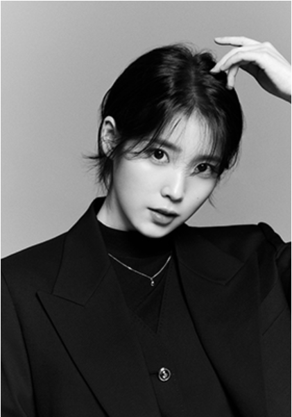

Welcome to
IU
un-official mini fan page
Get To Know More
About Me
Lee Ji-eun or commonly known as IU is a singer-songwriter, producer, model and actress from Korea. Her stage name comes from the words "I and You" which symbolizes that "we" can become "one" through music.
The fan club's name is UAENA, where each syllable has a different meaning: "you" is English, "ae" is Sino-Korean for "love", and "na" is Korean for "me". IU made her debut at the age of 15 in 2008, under LOEN Entertainment (now Kakao M)
Apart from her musical career, IU has also ventured into hosting radio and television shows, as well as acting. Following his supporting role in the teen drama Dream High
Get in Touch